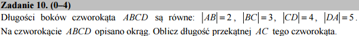

Czworokąt wpisany w okrąg z wykorzystaniem algebry komputerowej¶
Rozwiązanie klasyczne¶
Szkolny sposób rozwiązania tego zadania korzysta z dwóch twierdzeń. Po pierwsze suma kątów naprzeciwległych w czworokącie opisanym na okręgu wynosi \(\pi\). Po drugie można zastosować twierdzenie cosinusów dla trójkątów \(ABC\) i \(ACD\).
Oznaczając dla zwięzłości literami długości boków: \(|AB|=a,|BC|=b,|CD|=c,|DA|=d,|AC|=x\) oraz kąty \(\sphericalangle ABC=\alpha\) i \(\sphericalangle CDA=\pi-\alpha\) możemy w Sage napisać dla powyższych trójkątów dwa równania:
Drugie równanie można uprościć i otrzymamy układ równań z dwoma niewiadomymi:
Ponieważ interesuje nas tylko wartość długości przekątnej \(x\) możemy wyeliminować z powyższych równań \(\cos \alpha\). Wynik otrzymamy natychmiast:
Jak to działa?
Wykonaj powyższe polecenie obcinająć kolejne wyrażenia po „kropkach” od lewej by przekonać się jak to działa krok po kroku:
(eq1*c*d + eq2*a*b)
(eq1*c*d + eq2*a*b).solve(x)
(eq1*c*d + eq2*a*b).solve(x)[1]
(eq1*c*d + eq2*a*b).solve(x)[1].rhs()
Rozwiązanie alternatywne¶
Przypuścmy jednak, że nie pamiętamy ani twierdzenia cosinusów ani nie znamy własności czworokątów wpisanych w okrąg. Można by pokusić się o napisanie układu równań spełnionych przez współrzędne wszystkich punktów oraz promień okręgu, który jest też nieznany!. W sumie mamy \(8+1=9\) niewiadomych! Wynika z tego, że będziemy potrzebowali dziewięciu równań. Współrzędne każdego z punków spełniają równanie okręgu, co daje nam już cztery zależności. Następnie, ponieważ znamy odleglości pomiędzy kolejnymi wspólrzędnymi to mamy znowu cztery równości. Brakuje jeszcze jednej. Zauważmy, że nasz czworokąt wpisany w okrag możemy obracać o dowolny kąt względem środka okręgu. Wybierzmy tylko jedną orientację - na przykład taką w której pierwszy punkt leży na osi \(X\) - co nam da brakujące równanie \(y_0=0\).
Wszyskie te rówania zapiszemy od razu w Sage:
Pozostaje rozwiązać układ dziewięciu równań wielomianowych i otrzymamy rozwiązanie zadania. Bez pomocy algebry komputerowej powyższy układ równań nie wygląda zachęcająco. Okazuje się, że nawet dla komputera jest on problemem i wymaga dość wyroafinowanych technik. Jednak po chwili otrzymamy wynik:
Udało nam się otrzymać rozwiązanie (ściśle mówiąc kwadrat rozwiązania)!